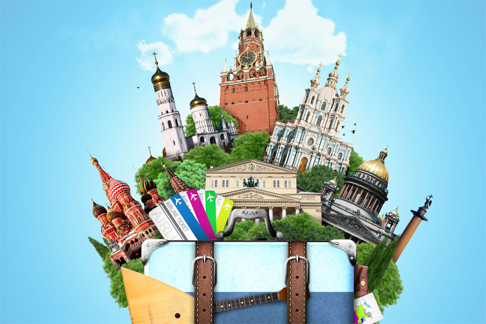

Путешествовать по России с нами - лучший ваш выбор!
Почему нужно выбрать именно нас?
Наша компания предлагает уникальные маршруты для путешествий по всей России. Мы найдем для вас подходящий маршрут и учтем все ваши потребности!

Горящие туры
| Город | Описание | Даты | Стоимость |
|---|---|---|---|
| Карелия | Карелия – это регион с целым набором туристических брендов: практически все слышали о Кижах и Валааме, Онежском озере и горном парке Рускеала. Это один из самых популярных туристических регионов России, куда едут любоваться на шедевры деревянного зодчества и живописный Мраморный каньон, отдыхать на чистых пляжах и искать затонувшие корабли, покорять леса и любоваться на водопады. | 21 - 22 декабря 2024 | 30 000 руб/чел |
| Мурманск | Расположенный на сопках Кольского залива Мурманск — крупнейший город в мире за полярным кругом. Летом здесь стоит полярный день — два месяца 24 часа в сутки светит солнце. Зимой же тут царит полярная ночь и часто можно увидеть северное сияние над незамерзающим морем. В порту Мурманска пришвартован первый в мире атомный ледокол «Ленин», за штурвалом которого можно постоять. А местные рестораны порадуют ценителей гастрономии морепродуктами и олениной. | 22 - 27 декабря 2024 | 50 000 руб/чел |
| Горно-Алтайск | Главный повод побывать в столице и единственном городе республики — Национальный музей им. А. В. Анохина, основанный более ста лет назад. В его коллекции свыше 60 тыс. объектов, в том числе палеонтологические и археологические находки, редкие образцы флоры, фауны и минералов, культовая атрибутика и предметы быта коренных народностей. Главный экспонат — знаменитая Алтайская принцесса. Мумии знатной женщины из скифского могильника в урочище Укок посвящён целый зал, но саму её из уважения к традициям демонстрируют лишь несколько раз в месяц — в дни новолуния. | 25 - 30 декабря 2024 | 70 000 руб/чел |
Хотите посмотреть все туры?